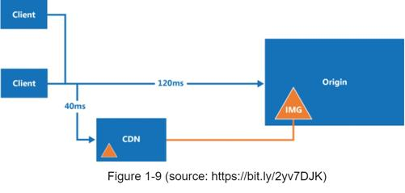
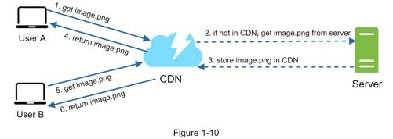
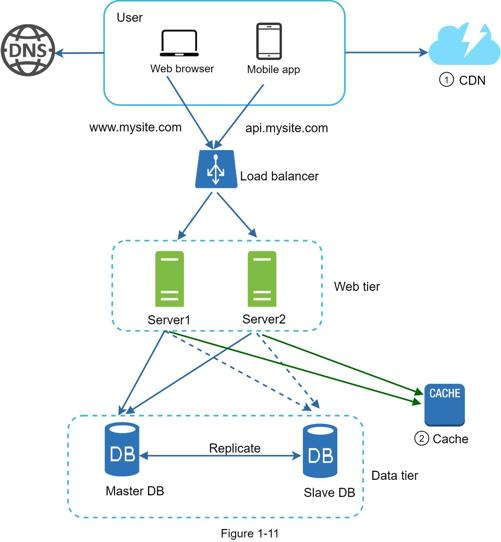

A CDN is a network of geographically dispersed servers used to deliver static content. CDN servers cache static content like images, videos, CSS, JavaScript files, etc.
Dynamic content caching is a relatively new concept and beyond the scope of this book. It enables the caching of HTML pages that are based on request path, query strings, cookies, and request headers. Refer to the article mentioned in reference material [9] for more about this. This book focuses on how to use CDN to cache static content.
Here is how CDN works at the high-level: when a user visits a website, a CDN server closest to the user will deliver static content. Intuitively, the further users are from CDN servers, the slower the website loads. For example, if CDN servers are in San Francisco, users in Los Angeles will get content faster than users in Europe. Figure 1-9 is a great example that shows how CDN improves load time.

Figure 1-10 demonstrates the CDN workflow.

1. User A tries to get image.png by using an image URL. The URL’s domain is provided by the CDN provider. The following two image URLs are samples used to demonstrate what image URLs look like on Amazon and Akamai CDNs:
•https://mysite.cloudfront.net/logo.jpg
•https://mysite.akamai.com/image-manager/img/logo.jpg
2. If the CDN server does not have image.png in the cache, the CDN server requests the file from the origin, which can be a web server or online storage like Amazon S3.
3. The origin returns image.png to the CDN server, which includes optional HTTP header Time-to-Live (TTL) which describes how long the image is cached.
4. The CDN caches the image and returns it to User A. The image remains cached in the CDN until the TTL expires.
5. User B sends a request to get the same image.
6. The image is returned from the cache as long as the TTL has not expired.
•Cost: CDNs are run by third-party providers, and you are charged for data transfers in and out of the CDN. Caching infrequently used assets provides no significant benefits so you should consider moving them out of the CDN.
•Setting an appropriate cache expiry: For time-sensitive content, setting a cache expiry time is important. The cache expiry time should neither be too long nor too short. If it is too long, the content might no longer be fresh. If it is too short, it can cause repeat reloading of content from origin servers to the CDN.
•CDN fallback: You should consider how your website/application copes with CDN failure. If there is a temporary CDN outage, clients should be able to detect the problem and request resources from the origin.
•Invalidating files: You can remove a file from the CDN before it expires by performing one of the following operations:
•Invalidate the CDN object using APIs provided by CDN vendors.
•Use object versioning to serve a different version of the object. To version an object, you can add a parameter to the URL, such as a version number. For example, version number 2 is added to the query string: image.png?v=2.
Figure 1-11 shows the design after the CDN and cache are added.

1. Static assets (JS, CSS, images, etc.,) are no longer served by web servers. They are fetched from the CDN for better performance.
2. The database load is lightened by caching data.